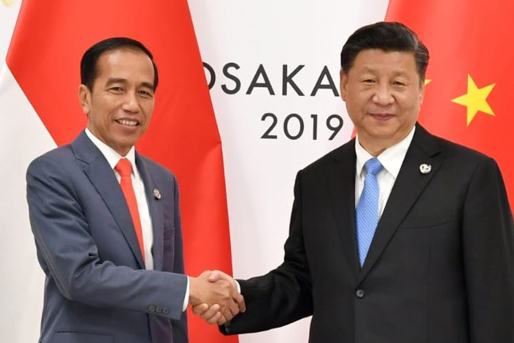

- Bilateral
Indonesia telah menandatangani perjanjian BBNJ yang bertujuan melindungi keanekaragaman hayati laut
di luar ketentuan nasional. Perjanjian ini akan mulai diterapkan pada tahun 2025 dan diharapkan
dapat berkontribusi pada konservasi dan pemanfaatan berkelanjutan ekosistem laut.
Melalui Penandatanganan perjanjian BBJN, Indonesia menjadi negara yang memimpin komitmen
internasional untuk tata kelola laut globall yang lestari dan lebih berkeadilan sesuai ketentuan
konvensi PBB tentang Hukum Laut. Penandatanganan perjanjian yang dilaksanakan bersamaan dengan
rangkaian yang dilaksanakan bersamaan dengan rangkaian program sidang umum Majelis PBB ke-78 untuk
menegaskan komitmen negara dan masyarakat internasional terhadap pemulihan lingkungan laut dan
sumber daya genetik laut secara berkelanjutan.
Pengaturan pemanfaatan sumber daya genetik di laut dalam diyakini akan berimplikasi pada tingkat
kesehatan laut global dan perkembangan industri bioteknologi strategis yang bernilai miliaran juta
dolar AS.
Sebagai negara kepulauan zona ekonomi eksklusifnya berbatasan langsung dengan laut bebas. Sebagai
negara yang memiliki keanekaragaman hayati genetik di laut yang sangat tinggi. Sebagai negara pihak
konvensi PBB tentang Hukum laut, Indonesia dapat terlibat dalam pengelolaan sumber daya genetik di
laut bebas, hal ini harus dimanfaatkan dengan baik melalui penguatan kapasitas riset dan pengaturan
pemanfaatan sumber daya yang lebih lestari.
Indonesia tidak boleh hanya terlibat tetapi harus mengambil peran strategis, memimpin tata kelola
laut yang lebih berkeadilan bagi negara berkembang, dan mendorong pengembangan kapasitas untuk
memastikan manfaat pemanfaatan sumber daya genetik di laut bebas.
- Regional
Indonesia terpilih menjadi pemimpin APEC pada 1994 karena kemampuan Indonesia bertahan di tengah
krisis. Pertumbuhan ekonomi Indonesia adalah yang tertinggi di antara negara kawasan Asia Pasifik.
Indonesia mendorong anggota APEC untuk mengembangkan sumber daya alam dan sumber daya manusia di
kawasan Asia Pasifik. Tujuannya adalah untuk mencapai pertumbuhan ekonomi berkelanjutan dan
pemerataan pembangunan, salah satunya dengan mengikis ketimpangan ekonomi antara negara anggota
APEC.
Salah satu peran Indonesia dalam APEC adalah Indonesia pernah menjadi tuan rumah KTT APEC 1994 dan
2013. 18 pemimpin negara anggota APEC hadir dalam KTT tersebut. Hal ini membuat dampak positif bagi
Indonesia dengan meluasnya potensi pariwisata Indonesia. Indonesia adalah negara kedua yang berhasil
melakukan sesi foto dengan pakaian khas Indonesia yaitu batik. Indonesia kembali menjadi tuan rumah
KTT APEC pada 2013 di Bali.
Indonesia menjadi salah satu anggota G20 diantara sembilan negara lainnya. Keanggotaan Indonesia
membuat berperan aktif dalam menjaga stabilitas dan penggerak ekonomi kawasan, tidak hanya itu
Keanggotaan Indonesia dalam G20 menjadikan Indonesia sebagai pasar bagi produk-produk impor dari
negara anggota APEC. Pasar kawasan yang semakin terbuka meningkatkan peluang bagi produk nasional
melakukan ekspor.
- Multilateral
WTO merupakan satu-satunya organisasi yang bertugas mengatur perdagangan antarnegara atau
internasional. WTO berjalan berdasarkan adanya berbagai perjanjian yang sudah disepakati bersama
oleh sebagian besar negara di dunia. Perjanjian tersebut dilakukan guna membantu produsen, penyedia
jasa, eksportir, serta importir dalam melakukan aktivitasnya.
WTO bermula dari sebuah organisasi yang bernama Uruguay Round serta beberapa perjanjian sebelumnya
yang masih berada di bawa GATT. Jumlah anggota WTO saat ini mencapai 154 negara dengan 117
diantaranya merupakan negara berkembang. Kini WTO dimanfaatkan sebagai forum atau wadah negosiasi
beberapa perjanjian baru yang berada di bawah Doha Development Agenda sejak 2001.
Indonesia telah menjadi bagian dari WTO sejak awal organisasi didirikan pada tahun 1995. Indonesia
telah aktif dalam melakukan kerjasama multilateral dalam bidang perdagangan sebagai anggota,
Indonesia diberikan hak untuk memperluas akses pasar dan bantuan teknis dari WTO dalam melakukan
negosiasi dan kerjasama. Indonesia sebagai negara berkembang mendapatkan Special and Differential
Treatment dalam perdagangan internasional.
WTO memberikan kewajiban kewajiban kepada Indonesia untuk melakukan transparansi kebijakan
perdagangan serta patuh terhadap aturan yang dimiliki WTO. Indonesia mampu menjalankan perannya
sebagai anggota WTO dengan cara meningkatkan keaktifan Indonesia dalam partisipasi negosiasi
perdagangan, Indonesia pernah berpartisipasi dalam forum untuk menyelesaikan masalah perdagangan
seperti negosiasi DDA.
Indonesia perannya oleh WTO dalam memperkuat kapabilitas dalam perdagangan Internasional juga
memperkuat perannya sebagai anggota dalam memperkuat intensitas ker sama dengan negara lain.
Indonesia bukan hanya penerima manfaat dari sistem perdagangan multilateral, hal ini juga membantu
menciptakan dan menegakkan standar perdagangan global. Indonesia dapat memanfaatkan partisipasinya
di WTO untuk mendorong kemajuan ekonomi dan kesejahteraan masyarakat internasional jika indonesia
terus ikut berperan aktif.

Kerjasama internasional adalah kolaborasi antara dua negara atau lebih, atau antara negara dan
organisasi internasional, dengan tujuan mencapai kepentingan bersama, mengatasi tantangan global, dan
meningkatkan kesejahteraan masyarakat di berbagai negara. Ini mencakup berbagai bidang seperti ekonomi,
politik, keamanan, lingkungan, kesehatan, pendidikan, dan budaya.

SDGs adalah komitmen global dan nasional dalam upaya untuk mensejahterakan masyarakat mencakup 17 tujuan
dan sasaran global tahun 2030 yang dideklarasikan baik oleh negara maju maupun negara berkembang di
sidang umum PBB pada September 2015. Ada 17 tujuan SDGs yang saling terkait dan saling mendukung untuk
mengatasi berbagai tantangan global yang dihadapi.
- Tanpa Kemiskinan
- Tanpa Kelaparan
- Kehidupan Sehat dan Sejahtera
- Pendidikan Berkualitas
- Kesetaraan Gender
- Air Bersih dan Sanitasi Layak
- Energi Bersih dan Terjangkau
- Pekerjaan Layak dan Pertumbuhan Ekonomi
- Industri, Inovasi dan Infrastruktur
- Berkurangnya Kesenjangan
- Kota dan Permukiman yang Berkelanjutan
- Konsumsi dan Produksi yang Bertanggung Jawab
- Penanganan Perubahan Iklim
- Ekosistem Lautan
- Ekosistem Daratan
- Perdamaian, Keadilan, dan Kelembagaan yang Tangguh
- Kemitraan untuk mencapai Tujuan